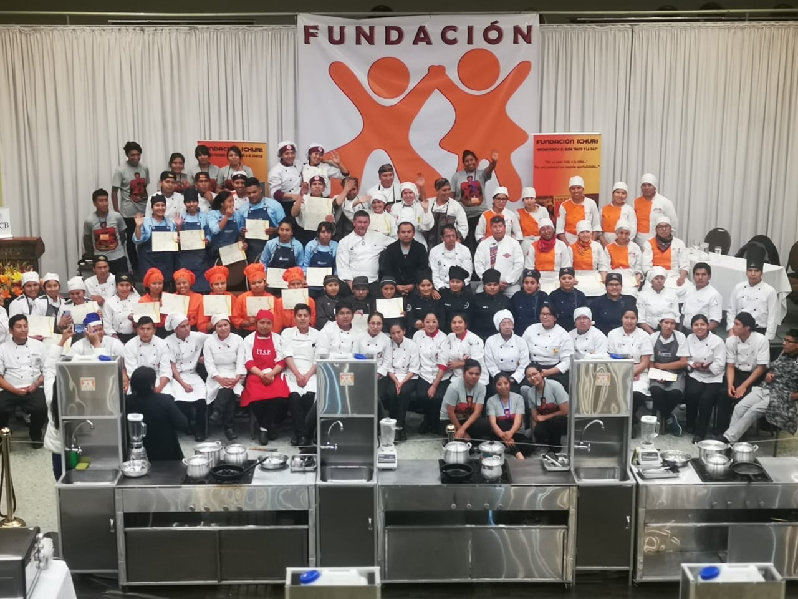

5to Concierto
En favor de los proyectos de los NIÑOS Y JÓVENES DE LA FUNDACIÓN ICHURI y CONMEMORANDO 10 AÑOS DE VIDA DE ESTE SUEÑO



En favor de los proyectos de los NIÑOS Y JÓVENES DE LA FUNDACIÓN ICHURI y CONMEMORANDO 10 AÑOS DE VIDA DE ESTE SUEÑO
ICHURI COFFEE RESTAURANT SAN FRANCISCO
Casa Matriz Mariscal Santa Cruz esquina Sagarnaga, Galería la República Piso 7, Nº 918
2900620 – 75810704
de 10:00 a 22:00
La Paz – Bolivia
ICHURI COFFEE RESTAURANT SOPOCACHI
Avenida Sanchez Lima entre Fernando Guachalla y Rosendo Gutierrez, Nº 2264
77287853
de 10:00 a 22:00
La Paz – Bolivia
ICHURI COFFEE RESTAURANT SANTA CRUZ
Avenida Strongesth entre Monseñor y Libertad (a lado del Comité Cívico de Santa Cruz).
3302478 – 75810701
de 10:00 a 22:00
Santa Cruz – Bolivia